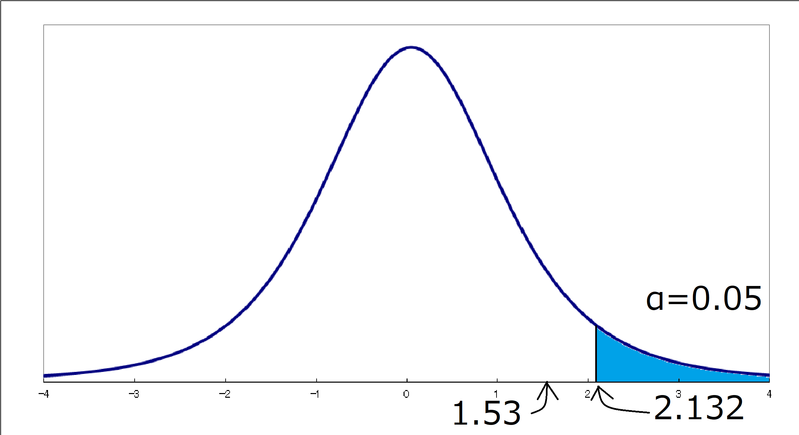

これは、パラメトリック検定の一つである。得られたデータの各観測地がペアとして対応している対標本における 各観測地の差の検定である。スチューデントのt検定やウェルチのt検定とは別物である。
データ間の対応とは、以下のようなものとなる。ある学年のあるクラスで実施した数学のテスト結果をデータAとする。 そのクラスに対し数学のドリルによる計算練習を一定期間与えた後に再度、同程度のレベルの数学のテストを受けさせ、 得られたテスト結果をデータBとする。このデータAとデータBには対応がある。 一方で、ある学年の別のクラスで実施した数学のテスト結果をデータCとする。このデータCとデータAには 対応がない。2つのデータがペアとして対応している対標本から得られた場合を対応があるといい、 別々の標本から得られた場合を対応がないという。
それでは、例題をみてみます。
血圧を下げる薬のテストを行います。被験者5人に対して薬の投与前と投与後の血圧を測定したところ、次の表のような
結果が得られました。この結果から、薬の投与によって血圧は下がったといえるでしょうか。
| 被験者No. | 投与前の血圧 | 投与後の血圧 |
|---|---|---|
| 1 | 180 | 150 |
| 2 | 130 | 135 |
| 3 | 165 | 145 |
| 4 | 155 | 150 |
| 5 | 140 | 140 |
対応がある場合の2標本のt検定では2群の差が0かどうかについての検定を行う。この例題では、投与前後での血圧の差が 0かどうかを検定します。したがって、まず薬の投与前後での血圧の差とその平均値を算出します。
| 被験者No. | 投与前の血圧 | 投与後の血圧 | 差（投与前-投与後） |
|---|---|---|---|
| 1 | 180 | 150 | 30 |
| 2 | 130 | 135 | -5 |
| 3 | 165 | 145 | 20 |
| 4 | 155 | 150 | 5 |
| 5 | 140 | 140 | 0 |
| 平均 | 154 | 144 | 10 |
帰無仮説H0は「投与前後の血圧は等しい=投薬によって血圧は下がらなかった」とします。したがって、 対立仮設H1は「投薬によって血圧に差があった=投薬によって血圧は下がった」となります。
α=0.05とします。
この実験では母分散がわからないので、普遍分散s2を用いるt統計量を使います。統計量tは次の式から
求められます。dは投薬による血圧の差の平均、μは差の母平均、nはサンプルサイズを表します。
t=
この検定で使用する分布は自由度「5-1=4」の「t分布」です。この例題では血圧が下がったかどうかのみを考えれば よいので、片側検定を行います。統計数値表からt4(0.05)を値を読み取ると「2.132」となっている。
投薬前後での血圧の差が0かどうかを検定するため、μ=0となります。また、投薬前後での血圧の差の普遍分散s2
は次のように計算します。
s2=1÷(5-1)×{(30-10)2+(-5-10)2+(20-10)2+(5-10)2+(0-10)2}
s2=212.5
この値を統計量tの式に代入すると次のようになる。
t=
(10-0)
√(212.5÷5)
≒1.53
次の図は自由度4のt分布を表したものです。t=1.53は図の矢印の部分に該当します。矢印は棄却域に入っていない ことから、「有意水準5%において、帰無仮説は棄却されない」という結果になります。つまり、「投薬によって 血圧が下がったとは言えない」と結論付けられます。
 トップページへ